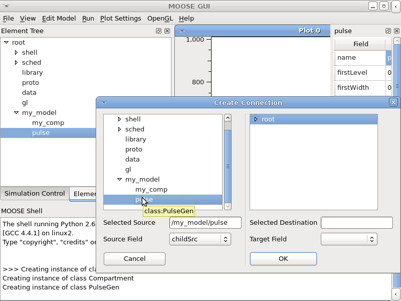
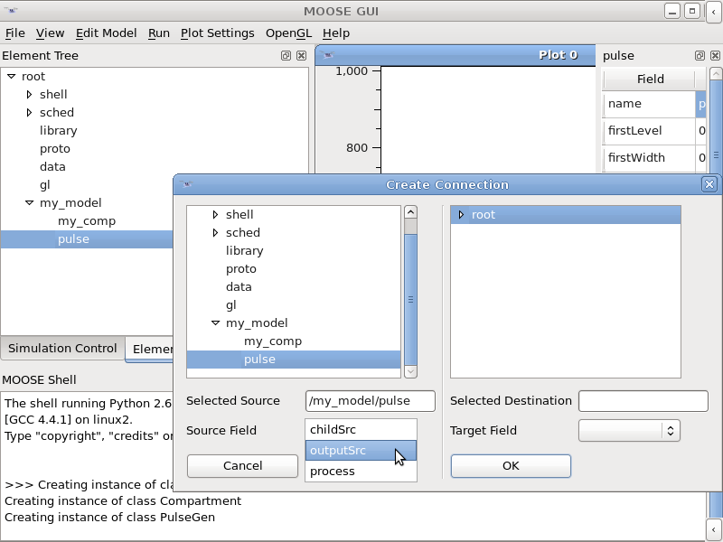

5 Adding elements in a model
5.1 Adding a new element in the Element Tree
You can add a new element in a model by using the class list on the
right hand side pane in moosegui see Moose Classes. Double clicking the class name will create a new element in
the Element Tree under the currently selected element and also open
the Object Editor widget for the new element. The element will
have the same name as the class name. It is up to you to rename it to
something more appropriate. To do so edit the name field in the
Object Editor.
5.2 Connecting elements via messages
Just creating an element may not be sufficient for any complex
model. You need to enable this model to talk to other elements during a
simulation. This is done via messages.
To do this,
- Click
Edit Model in the menu bar and select Connect
Elements.
This will pop up a window with two panes. The left pane is for
selecting the source of the message, the right for the destination of
the message. Both has a model tree and drop-down menu for the message
field.

- Select source
In the left pane, expand the
Element Tree and select the element
which will be the source of the message. Once you select the element,
the drop-down menu labeled Source Field will be populated. You
have to select the appropriate source field here.

- Select Destination
Similar to selecting source, you have to select the destination element
and the target field in the right pane.
- Click OK to actually make the connection.